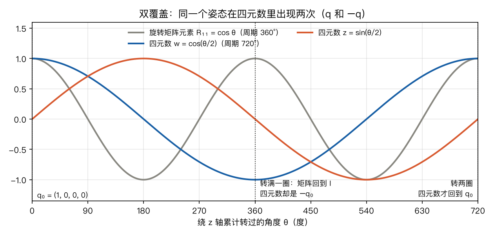
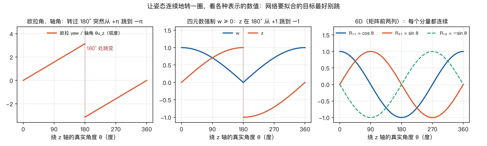
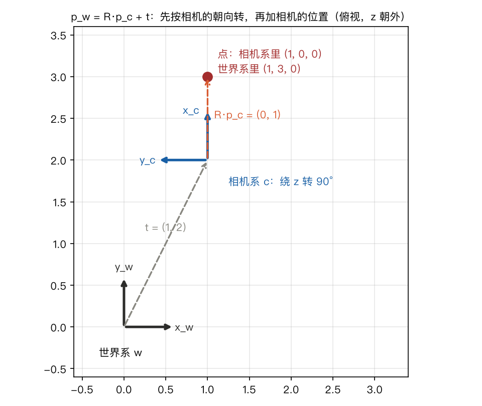

第 18 章 · 3D 旋转与刚体变换：动作里的姿态该用什么表示
本地运行
git clone https://github.com/wikieden/math-and-eval-stats
cd math-and-eval-stats/code/notebooks
pip install jupyterlab torch numpy
jupyter lab ch18_rotations.ipynb也可以下载后直接用 VS Code 打开 .ipynb 运行。需要 GPU 的章节在 Colab 里选「代码执行程序 → 更改运行时类型 → GPU」。
本章回答：旋转矩阵有哪些性质，为什么乘法顺序不能换？欧拉角的"万向锁"是怎么回事？四元数为什么有 q 和 −q 两个？网络要输出姿态时，为什么推荐 6D 表示？相机、机械臂、世界几个坐标系之间的点怎么换算？
讲解日期：2026-11-23 · 上一章：第 17 章 生成模型的数学 · 下一章：第 19 章 李群入门
对应原文：Solà《Quaternion kinematics for the error-state Kalman filter》§1–2materials/text/papers/quaternion-kinematics-eskf-1711.02508.txt（目录 L12–L54；单位四元数是 SO(3) 的双覆盖 L637–L678）；Zhou 等《On the Continuity of Rotation Representations in Neural Networks》materials/text/papers/rotation-representation-continuity-1812.07035.txtL28–L62（欧拉角、四元数不连续，5D / 6D 连续）；Modern Robotics 第 3 章（复用，robot-system-architecture/materials/books/modern-robotics-lynch-park.pdf）
本章缩写：SO(3) = Special Orthogonal group in 3D（三维 / 特殊 / 正交群：所有三维旋转矩阵）；SE(3) = Special Euclidean group in 3D（三维 / 特殊 / 欧氏群：旋转 + 平移）；ZYX 欧拉角 = 先绕 z（yaw，偏航）、再绕 y（pitch，俯仰）、再绕 x（roll，横滚）；SLERP = Spherical Linear intERPolation（球面 / 线性 / 插值）；6D 表示 = 用旋转矩阵前两列（6 个数）表示旋转。全部缩写见 附录 · 缩写与术语表
讲解
第一步：旋转矩阵：三根正交的单位轴（2026-11-23）
类比：一个物体身上画着三根互相垂直的箭头（红 x、绿 y、蓝 z）。 旋转矩阵的三列，就是这三根箭头在世界坐标系里的方向。
- \(R^\top R = I\)：三列互相垂直且长度为 1；所以 \(R^{-1} = R^\top\)，求逆只要转置。
- \(\det R = +1\)：右手系（−1 是镜像，不是旋转）。
- 所有这样的矩阵组成 SO(3)。9 个数、6 个约束，只有 3 个自由度。
例子：绕 z 轴转 90°，\(R_z(90°)\,(1,0,0)^\top = (0,1,0)^\top\)：x 轴转到了 y 轴。
顺序不能换：\(R_z(90°)R_x(90°) \ne R_x(90°)R_z(90°)\)。拿手机试：先绕竖轴转 90° 再绕横轴转 90°，和反过来，手机最后朝向不同。
一句话：旋转矩阵的列是物体的三根轴；正交、行列式为 1、求逆即转置、乘法不交换。
第二步：欧拉角与万向锁（2026-11-23）
类比：云台的三个电机。 外圈管偏航、中圈管俯仰、内圈管横滚。中圈转到 90° 时，外圈和内圈的转轴重合了，两个电机转的是同一个方向，丢了一个自由度。
ZYX 欧拉角：\(R = R_z(\text{yaw})\,R_y(\text{pitch})\,R_x(\text{roll})\)。
例子（万向锁）：pitch = 90° 时，
| yaw | pitch | roll | 得到的姿态 |
|---|---|---|---|
| 30° | 90° | 10° | R₁ |
| 50° | 90° | 30° | R₂ = R₁ |
yaw 和 roll 同时加 20°，姿态不变：只有 yaw − roll 起作用。这时从姿态反算欧拉角有无穷多解，在 90° 附近反算会剧烈跳变。
欧拉角适合给人看（"抬头 10°"），不适合做插值、优化，也不适合当网络输出。
一句话：欧拉角三个数很直观，但中间那个角到 ±90° 时会锁死一个自由度。
第三步：轴角与 Rodrigues 公式（2026-11-23）
欧拉旋转定理：任何旋转都是"绕某根轴 \(\mathbf{u}\) 转角度 θ"。轴角向量 \(\boldsymbol\phi = \theta\mathbf{u}\)（3 个数）。
- \([\mathbf{u}]_\times\)：读作"u 的叉乘矩阵"，\([\mathbf{u}]_\times\mathbf{v} = \mathbf{u}\times\mathbf{v}\)。
- 这就是指数映射 \(R = \exp([\boldsymbol\phi]_\times)\) 的闭式解（第 19 章李群）。
例子：\(\mathbf{u} = (0,0,1)\)、θ = 90°，Rodrigues 公式给出的矩阵和 \(R_z(90°)\) 一样。
一句话：任何旋转都是绕一根轴转一个角；轴角 → 矩阵用 Rodrigues 公式。
第四步：四元数：4 个数、没有万向锁、q 和 −q 是同一个旋转（2026-11-23）
- 用的是半角 θ/2。
- 旋转一个向量：\(\mathbf{v}' = \mathbf{q}\otimes(0,\mathbf{v})\otimes\mathbf{q}^*\)，\(\mathbf{q}^* = (w, -x, -y, -z)\) 是共轭。
- 组合旋转：\(\mathbf{q}_a\otimes\mathbf{q}_b\) 表示先转 b 再转 a，对应 \(R_aR_b\)。
- 双覆盖：\(\mathbf{q}\) 和 \(-\mathbf{q}\) 表示同一个旋转（θ 和 θ + 360° 的半角差 180°，cos、sin 都变号）。Solà 称单位四元数群是 SO(3) 的 double cover（L637）。
例子：绕 z 转 90°：\(\mathbf{q} = (0.7071, 0, 0, 0.7071)\)，把 (1, 0, 0) 转到 (0, 1, 0)；\(-\mathbf{q}\) 对应的矩阵和 \(\mathbf{q}\) 完全一样。
约定陷阱：四元数有两种顺序（w 在前 / w 在后）和两种乘法（Hamilton / JPL）。Solà 第 3 章专门讲这件事（"Quaternion conventions. My choice."）。不同库混用是机器人代码里最常见的 bug 之一：scipy 的 as_quat() 是 (x, y, z, w)，Eigen 构造函数是 (w, x, y, z)。

图 18-1 · 绕 z 轴一直转下去。矩阵元素每 360° 重复一次；四元数要 720° 才重复，转满一圈时得到的是 −q₀，和 q₀ 表示同一个姿态。
一句话：四元数 = 半角的轴角；无万向锁、插值平滑；q 与 −q 同一个旋转，用之前先确认顺序约定。
第五步：网络输出旋转：为什么用 6D 表示（2026-11-23）
问题：网络的输出是连续函数。如果目标表示在某些地方"跳变"，网络就很难拟合。
| 表示 | 数 | 当网络输出的问题 |
|---|---|---|
| 欧拉角 | 3 | 有万向锁、在 ±180° 处跳变 |
| 轴角 | 3 | θ = 180° 附近跳变（\(\mathbf{u}\) 和 \(-\mathbf{u}\)） |
| 四元数 | 4 | q 和 −q 双覆盖；强制 w ≥ 0 又会在 w = 0 处跳变 |
| 旋转矩阵（9 个数） | 9 | 网络输出不一定正交 |
| 6D：矩阵前两列 + Gram-Schmidt | 6 | 连续，且一定能还原成合法旋转 |
Zhou 等证明：3D 旋转在 4 维及以下的实数空间里的表示都不连续，5D、6D 有连续表示（L28–L44）。
Gram-Schmidt 还原：
例子：网络随便输出 \(\mathbf{a}_1 = (1, 0.2, 0)\)、\(\mathbf{a}_2 = (0.3, 1, 0.1)\)，还原后 \(R^\top R = I\)、\(\det R = 1\)。
在 VLA 里：末端姿态动作常用 6D 表示（或相对旋转的轴角，因为相对旋转很小、远离 180°）。

图 18-2 · 真实姿态连续转一圈。欧拉角和轴角在 180° 从 +π 跳到 −π；四元数强制 w ≥ 0 后 z 从 +1 跳到 −1；6D 表示的每个分量都是连续的正余弦。
一句话：要网络输出姿态，用 6D（两列 + Gram-Schmidt）；四元数和欧拉角都有跳变。
第六步：SE(3)：旋转加平移，用 4×4 矩阵一起管（2026-11-23）
类比：一张"如何从相机坐标走到世界坐标"的说明书：先转个方向，再挪个位置。
- \(T_{wc}\)：读作"从 c（相机）到 w（世界）"，把相机系下的点变到世界系。
- 齐次坐标：点后面补 1，平移也能写成矩阵乘法；方向向量补 0（不受平移影响）。
- 链式：\(T_{wb} = T_{wc}T_{cb}\)，下标"中间消掉"。
例子：相机在世界系里绕 z 转 90°、位于 (1, 2, 0)。相机系下的点 (1, 0, 0)：
再用 \(T^{-1}\) 变回去，得到 (1, 0, 0)。
场景代码：机器人项目里用 scipy.spatial.transform.Rotation 做表示之间的转换，注意四元数顺序：
import numpy as np
from scipy.spatial.transform import Rotation as R
r = R.from_euler("ZYX", [90, 0, 0], degrees=True) # 第二步：大写 ZYX = 内旋（绕自身轴），yaw-pitch-roll
q_xyzw = r.as_quat() # 第四步：scipy 的顺序是 (x, y, z, w) = [0, 0, 0.7071, 0.7071]
rotvec = r.as_rotvec() # 第三步：轴角向量 θu = [0, 0, 1.5708]
six_d = r.as_matrix()[:, :2].reshape(-1) # 第五步：6D 表示 = 前两列
T_wc = np.eye(4) # 第六步：相机在世界系的位姿
T_wc[:3, :3], T_wc[:3, 3] = r.as_matrix(), [1, 2, 0]
p_w = T_wc @ np.array([1, 0, 0, 1]) # 相机系的点 → 世界系 (1, 3, 0)
补基础：《机器人软硬件架构》第 2 章 运动学 用 SE(3) 讲了正运动学和坐标系树（tf2）。

图 18-3 · 俯视例子。先把相机系里的点 (1, 0, 0) 按相机朝向转成 (0, 1)（橙），再加上相机位置 t = (1, 2)（灰），得到世界系里的 (1, 3, 0)。
一句话：位姿 = 4×4 齐次矩阵；下标写清"从哪到哪"，链式相乘时中间下标消掉。
动画演示：转动一个坐标系，看欧拉角锁死

可交互版：animations/18-euler-gimbal-lock.html（滑块：yaw、pitch、roll）
怎么看： 1. 中间是一个带红 / 绿 / 蓝三根轴的方块（第一步：三根轴就是 R 的三列），下面实时显示 R 和四元数。 2. 动画先把 pitch 从 0° 推到 90°，然后同时转 yaw 和 roll（第二步）。 3. pitch = 90° 时，转 yaw 和转 roll 让方块绕同一根轴转：yaw 和 roll 一起加同样的角度，方块完全不动。 4. 看四元数一栏：整个过程中它连续变化，没有锁死（第四步）。
练习与作答记录
题 1（第一步）：写出绕 x 轴转 90° 的旋转矩阵，验证它把 (0, 1, 0) 转到哪里；它的逆矩阵是什么？
作答：（待作答）
题 2（第四步）：绕 x 轴转 180° 的四元数是什么？它的负四元数表示什么旋转？如果一个数据集里同一姿态有时存成 q、有时存成 −q，直接用均方误差训练网络回归四元数会有什么问题？
作答：（待作答）
题 3（第六步）：机械臂基座在世界系里的位姿是"不转、位于 (0, 0, 1)"，末端在基座系里的位姿是"绕 z 转 90°、位于 (0.5, 0, 0)"。求末端在世界系的位置；末端系里的点 (0.1, 0, 0) 在世界系里在哪？
作答：（待作答）
口诀
三列就是三根轴，转置求逆不交换；
中间转到九十度，偏航横滚锁一起；
四元半角无万向，q 和负 q 同一转；
网络输出用 6D，位姿四乘四串起。
本章复习卡片
ST23–ST26（必须记住的公式和概念）。练习做完后，按答错、卡住的地方补上。
附录 · 延伸阅读
留给以后深入学习用，不影响本章主线。★ 是建议先读的。
推荐阅读
| 读什么 | 读哪里 | 读它为了什么 |
|---|---|---|
| ★ Solà《Quaternion kinematics for the ESKF》 | §1–2（目录 L12–L54）、§2.7 SLERP、§3 约定 | 四元数性质、与 SO(3) 的关系、插值、约定陷阱 |
| ★ Zhou 等 2019 | L28–L62、§3–4 | 为什么网络输出要用 6D |
| Modern Robotics 第 3 章 | 刚体运动、指数坐标 | SE(3)、旋量、Rodrigues 的推导 |
| Barfoot《State Estimation for Robotics》2e | 三维几何章 | 旋转、位姿的扰动和不确定性 |
| 《机器人软硬件架构》第 2 章 | 全章 | 运动学与坐标系树 |
数学原理
- SO(3) 是群：两个旋转的乘积还是旋转，有单位元和逆元，但不交换；第 19 章讲它的"切空间"。
- 四元数乘法：\((w_1, \mathbf{v}_1)\otimes(w_2,\mathbf{v}_2) = (w_1w_2 - \mathbf{v}_1\cdot\mathbf{v}_2,\; w_1\mathbf{v}_2 + w_2\mathbf{v}_1 + \mathbf{v}_1\times\mathbf{v}_2)\)。
- 两个旋转的距离：\(\theta = \arccos\big((\mathrm{tr}(R_1^\top R_2) - 1)/2\big)\)，就是相对旋转的转角；用四元数是 \(2\arccos|\mathbf{q}_1\cdot\mathbf{q}_2|\)（绝对值处理双覆盖）。
- 拓扑原因：SO(3) 同胚于实射影空间 RP³，不能连续地嵌入 ℝ⁴ 及以下，这是 Zhou 等结论的根源。
公式清单
| 公式 | 意思 |
|---|---|
| \(R^\top R = I,\ \det R = 1\) | 旋转矩阵 |
| \(R = R_z(\psi)R_y(\theta)R_x(\phi)\) | ZYX 欧拉角 |
| \(R = I + \sin\theta[\mathbf{u}]_\times + (1-\cos\theta)[\mathbf{u}]_\times^2\) | Rodrigues 公式 |
| \(\mathbf{q} = (\cos\frac\theta2, \sin\frac\theta2\mathbf{u})\) | 轴角 → 四元数 |
| \(\mathbf{v}' = \mathbf{q}\otimes(0,\mathbf{v})\otimes\mathbf{q}^*\) | 四元数旋转向量 |
| 6D：\(R = [\mathbf{b}_1, \mathbf{b}_2, \mathbf{b}_1\times\mathbf{b}_2]\) | 网络输出旋转 |
| \(T^{-1} = [[R^\top, -R^\top\mathbf{t}], [0, 1]]\) | 位姿求逆 |
代码对照：把本章的数字用代码算一遍
Python + NumPy。代码在仓库本地
math-and-eval-stats/solutions/chapter-code/ch18_rotations.py，配套测试tests/test_ch18.py：
bash cd math-and-eval-stats/solutions/chapter-code uv run python ch18_rotations.py uv run pytest tests/test_ch18.py
讲义 ↔ 代码：
| 讲义 | 公式 | 写法 | 跑出来 |
|---|---|---|---|
| 第一步 | 旋转矩阵性质、不交换 | rot_z、rot_x |
(1,0,0) → (0,1,0)；RᵀR = I；Rz·Rx ≠ Rx·Rz |
| 第二步 | 万向锁 | euler_zyx(30°, 90°, 10°) vs (50°, 90°, 30°) |
相同 |
| 第三步 | Rodrigues | rodrigues([0,0,1], 90°) |
等于 rot_z(90°) |
| 第四步 | 四元数 | quat_from_axis_angle、quat_rotate、quat_mul |
(0.7071, 0, 0, 0.7071)；q 与 −q 同矩阵；q_z⊗q_x ↔ Rz·Rx |
| 第五步 | 6D | matrix_from_6d |
RᵀR = I，det = 1 |
| 第六步 | SE(3) | se3、se3_inv |
(1, 0, 0) → (1, 3, 0) → (1, 0, 0) |
关键几行：
K = skew(u)
R = np.eye(3) + math.sin(angle) * K + (1 - math.cos(angle)) * K @ K # Rodrigues
q = np.concatenate([[math.cos(angle / 2)], math.sin(angle / 2) * u]) # 半角！
b2 = a2 - np.dot(b1, a2) * b1 # Gram-Schmidt：去掉 b1 方向的分量
b2 /= np.linalg.norm(b2)
T_inv = se3(R.T, -R.T @ t) # 位姿求逆：不要用 np.linalg.inv
代码里才看得到的 3 件事：
- 本模块四元数是 (w, x, y, z)，scipy 是 (x, y, z, w)。对接时要换位，测试里用旋转矩阵比较，就能绕开顺序和正负号问题。
rot_y的矩阵里 sin 的正负号和rot_x、rot_z相反位置（左下是 −s），这是右手系绕 y 轴的标准形式，手写时最容易抄错。- 位姿求逆用 \([R^\top, -R^\top t]\)，比
np.linalg.inv快，而且结果一定还是合法的 SE(3)；数值求逆会累积误差让 R 不再正交。
自己改一改（不影响练习答案）：
- 把万向锁例子的 pitch 改成 89°，看两个姿态还相同吗、差多少。
- 用
quat_mul验证 \(\mathbf{q}\otimes\mathbf{q}^* = (1, 0, 0, 0)\)。 - 对照 notebook，随机生成 1000 组 6D 输出，检查还原后都满足 RᵀR = I。